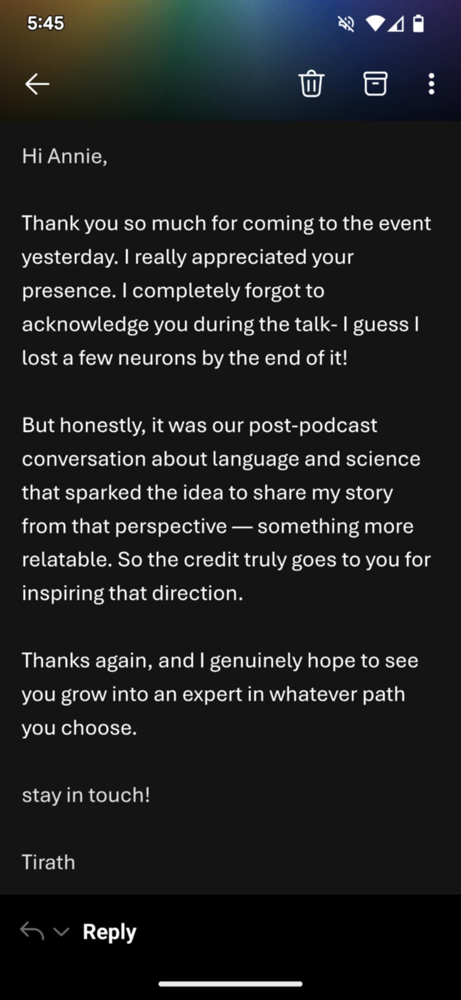
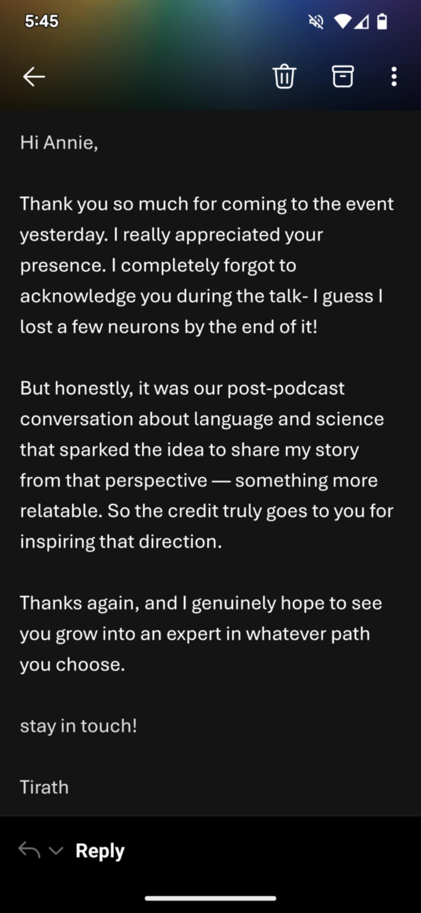

Skill Description
A Little Fuzzy A Little Fuzzy is science communication, with an openness to the process of being messy. This skill has been undertaken by appearing on the Fuzzy Logic Radio station, where I have been a cohost – researching, and delivering content about scientific topics, as well as engaging in conversation with the host, and most recently, interviewing scientists prior to Pint of Science (a worldwide event promoting science communication). The subskills of A Little Fuzzy have been allocated as follows: A = Research; B = Voice Presence (i.e. no ‘ahs’ ‘ums’ & confident) C = Conversational Skills; D = Consistently sharing
Subskills & Self-Assessment
- A: Research
- B: Voice Presence
- C: Conversational Skills
- D: Sharing Publicly
Checkpoint 1 to 2 growth is shown in a custom criteria (see reflective narrative below).
Reflections
Research (A)
Before each Fuzzy Logic show I have been required to come prepared with notes from scientific papers. It is from these notes that the show’s content is created. This has led to a quick-fire learning of research for science communication. Where previously I dabbled in researching content, I developed utilizing the content from the papers to create questions and comments about science subjects.
Voice Presence (B)
I’ve done voice over work in the past, along with Toastmasters and Improv. This is why I began the build journey at level 3 for voice presence. However, I have not seen improvement in this area to the point where I am creating my own work and sharing. At this moment, I have been using existing opportunities to further this skill. I would like to take on a more active role in developing this aspect of A Little Fuzzy.
Conversational Skills (C)
Through radio and science events, I've expanded beyond casual talk into purposeful dialogue—one highlight being a thoughtful email of appreciation from interviewee Tirath.
Sharing Publicly (D)
My aim for the past five years has been to share my words and work publicly. I don’t really do that at the moment. I am only sharing when given the nudge from Fuzzy Logic, and assignments. By checkpoint 3, I would like to design and share my own projects publicly.
Evidence Gallery

 


Checkpoint Growth